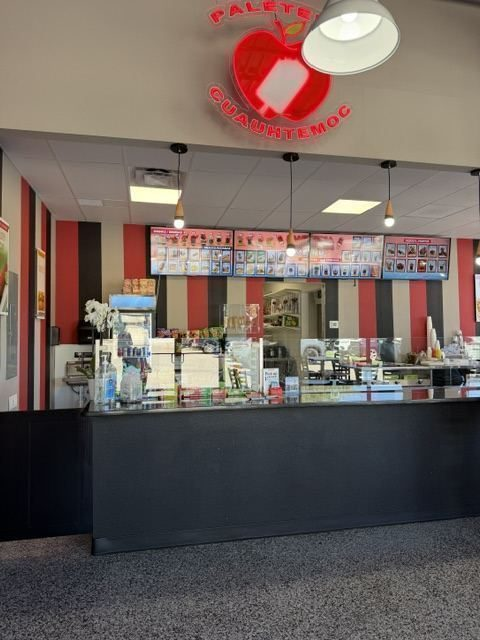

Paletas and Ice Cream Near the Albuquerque Airport
Mexican paletas made the traditional way — real fruit, real cream, no shortcuts — plus aguas frescas, ice cream and snacks. Suite A at 2500 Yale Blvd SE, 1.2 miles from the Sunport. Open until 9pm, seven days a week.
What They Make
The Best Thing to Do About an Albuquerque Afternoon
A paletería is a Mexican ice pop shop, and Cuauhtémoc runs a proper one — fruit paletas made with actual fruit, cream paletas, ice cream, and aguas frescas poured over ice. It's the kind of counter you find on a hot street corner in Mexico and almost never find in an airport.
Which is the point: you're three minutes off the terminal, it's 95 degrees, and your flight isn't for two hours. Park once, eat next door at Perico's, and finish here.

Family Stop, Travel Stop
It works for both. Locals bring kids after school; travelers grab something cold on the way to the terminal. Delivery is available if you'd rather have it come to your hotel on the Yale Blvd strip.
Also at Yale Landing: Perico's Tacos & Burritos for New Mexican plates, and FMV Brewing Co. for beer, wine and house-roasted coffee.
Nearby
More to Eat and Drink at Yale Landing
Everything is in the same building at 2500 Yale Blvd SE, 1.2 miles from the Albuquerque Sunport.